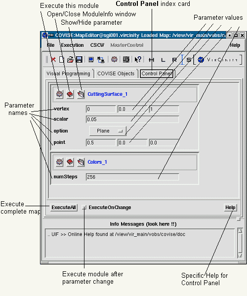
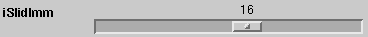

The Control Panel is created when COVISE starts; switch to this index card by clicking on the corresponding entry. Its purpose is the collection of graphical interactors which typically represent often used and changed parameters.
Parameters are loaded as parameter interactors (see below) to the Control Panel
|  |
| Map Editor - Control Panel index card |
Panel contains examples for scalar, vector,
boolean, and choice parameters (DomainSurface) and a scalar parameter
(Colors)
Mapping of parameters from Module Setup to Control Panel allows you to close the Module Information window if not needed otherwise.
The default mapping (left mouse
button) of parameters to parameter interactors in the Control Panel looks
as follows (proposed delta values are ignored):
| Scalar | scalar value
(+ proposed delta value) |
to | string containing scalar value |
| String | string | to | string |
| Vector | triple of scalar values | to | triple of strings containing scalar values |
| Boolean | ON/OFF switch for TRUE|FALSE | to | ON/OFF switch |
| Choice | choice menu | to | choice menu |
| Slider | triple of values (min, max, actual)
(+ proposed delta value) |
to | string with min value,
slider with actual value, string with max value |
| Browser | book icon / filename | to | book icon / text string |
For scalar, slider, and choice you have
additional possibilities; if you use the right mouse button, one
of the choice menus below allows you select an appearance type
| for Scalar: | for Slider: | for Choice: |
| String
Player |
Slider
Sequencer |
Choice Menu
Combobox |
The first item of the appearance menu gives
you the default, the additional possibilities are:
| Scalar | scalar value
(+ proposed delta value) |
to | player with actual value, delta as increment/decrement) |
| Slider | triple of values (min, max, actual) (+ proposed delta) | to | seqencer with actual = value, delta as increment/decrement, min and max used as boundaries |
| Choice | choice menu (button as entry to list of choices) | to | combobox (actual choice with arrow pointing to list of choices |
Notes:
|
If you try the right mouse button for other parameters than scalar, slider, or choice you get: There is no appearance menu for this parameter! If you select spinbox in the appearance
menu for a a float scalar, you get: Paneltype not supported for float values.
|
|
The MapEditor suggests you a delta value, but normally you will have to adjust it depending on your data. |
|
For Collaborative Working only - please observe the following restrictions for scalar/slider parameters if their appearance type has been changed to player/sequencer:
|
Slider parameter (mapped as slider and as player):


Choice parameter (mapped as choice menu and as combobox ):
Notes:
| Player and sequencer have the same appearance, but whereas the player works w/o limits, the sequencer uses the min and max values as limits. |
| Browser parameter: If you have selected modules before and not used predefined maps, the browser window has already come up automatically with the module. |
The name of the module is copied to the Control Panel with the first parameter interactor. Together with the modul name you get three additional icons:
| Same function provided by
Exec from 'Further Actions' menu (Working with Modules) Execute from the Module Information window |